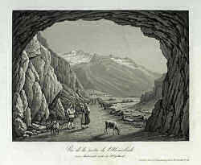
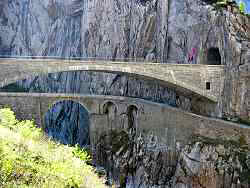

Urnerloch
Useful Information
 |
| Image: Vue de l'entrée, Aquatinta, Straub Weber, Leuthold Zürich um 1840. |
| Location: | |
| Open: | |
| Fee: | |
| Classification: | |
| Light: | |
| Dimension: | |
| Guided tours: | |
| Photography: | |
| Accessibility: | |
| Bibliography: | |
| Address: | |
| As far as we know this information was accurate when it was published (see years in brackets), but may have changed since then. Please check rates and details directly with the companies in question if you need more recent info. | |
| Last update: | $Date: 2015/11/20 13:15:51 $ |
History
| 20-SEP-1707 | contract for the construction of the tunnel signed. | |
| 15-AUG-1708 | Tunnel completed. |
Description
|  |
| Image: Vue de la Sortie de l'Urnerloch, Aquatinta, Dikenmann, Zürich um 1850. |
This is really an exceptional tunnel, as it is the first road tunnel ever built! It is located at an important north-south route through the Alps, the Gotthard Pass road.
The main problem of the Gotthard Pass is the narrow gorge called
 Schöllenenschlucht.
The pass height is only 1,170m asl, which makes it an rather low and easy pass.
But there is this narrow gorge, which could not be crossed, and so it was
necessary to cross the Bätzberg which meant a 600m height difference.
It was overcome by two important constructions, the
Twärrenbrücke and the Teufelsbrücke (Devils Bridge).
The story of the Devils Bridge, and how it got its name, is told in a
legend.
Schöllenenschlucht.
The pass height is only 1,170m asl, which makes it an rather low and easy pass.
But there is this narrow gorge, which could not be crossed, and so it was
necessary to cross the Bätzberg which meant a 600m height difference.
It was overcome by two important constructions, the
Twärrenbrücke and the Teufelsbrücke (Devils Bridge).
The story of the Devils Bridge, and how it got its name, is told in a
legend.
|  |
| Image: the old and new Divils Bridge. Picture by Markus Schweiß, © GNU FDL |
|
The council of Urn went to the dangerous place in the gorge of the river Reuss. They discussed the problems for hours, but got no result. Finally one of the councilmen went so angry that he shouted: "Do sell der Tyfel e Brigge bue!" (There may the devil build a bridge!). Immediatly the devil appeard and telled, he wuold build the bridge, if he got the soul of the first one crossing the bridge. The clerk of the council noted this agreement, and the following day a stone bridge crossed the gorge. But now the price had to be payed. One councilman asked a few boys to drove a huge billy goat across the bridge. When the goat saw the devil with his horns, it paced towards him. The devil became so angry that he was tricked, he teared the goat to tatters. Old legend. |
But this was only a part of the problem. There was still another steep wall along the gorge. A blacksmith from Göschenen or Andermatt had an idea: he mounted iron chains into the vertical rock and stuck wooden planks through the loops in the chains. This bridge was called the Seventh Bridge or Twärrenbrücke. It worked well and the simple connection caused an enormous boom across the pass. But the problem was, that the bridge was destroyed by floods now and then. And every time it had to be reconstructed.
After another flood in 1707, the bridge was destroyed completely and also part of the road. Now the people planned to construct a save alternative. Pietro Moretti, who lived in Locarno and originated from the Val Maggia, was colonel and engineer. He was an apprentice of the famous French architect Vauban, famous for his fortresses. Moretti was asked to build a tunnel, and signed a contract in the same year. He was liable to ensure the traffic in spring 1709, but he needed only eleven months, and the tunnel was opened in August 1708. Two people died during the construction and the costs were about two times higher than planned, because of unforseen problems. But the new tunnel was so important, traffic across the pass almost exploded.
The Urnerloch is an outstanding tunnel, as it was the first road tunnel ever built.
 Schöllenenschlucht
Schöllenenschlucht Gotthard Basistunnel
Gotthard Basistunnel Search Google for "Urnerloch"
Search Google for "Urnerloch" Google Earth Placemark
Google Earth Placemark Das Urnerloch 1708
(
Das Urnerloch 1708
( Reuss (Fluss) - Wikipedia
(
Reuss (Fluss) - Wikipedia
({kind=link}
{kind=link}